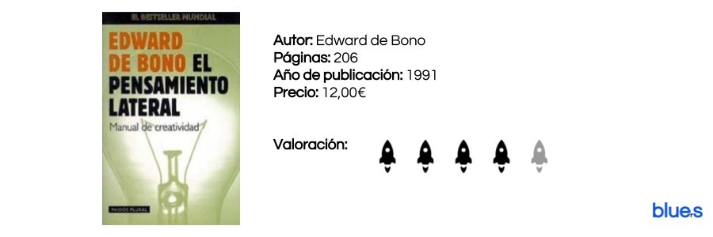
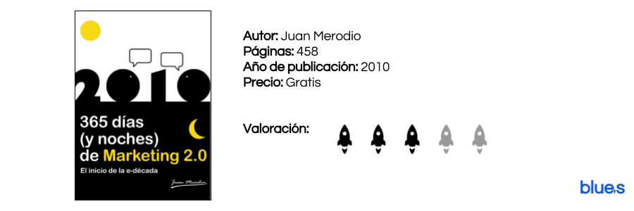
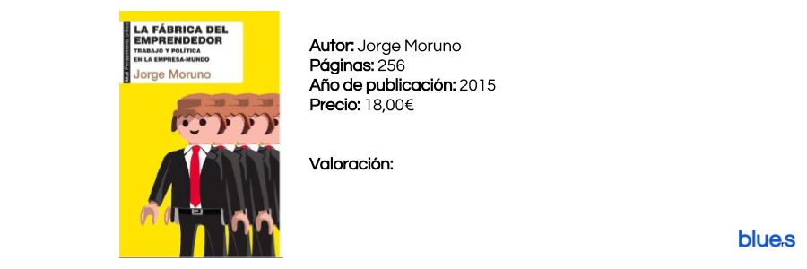
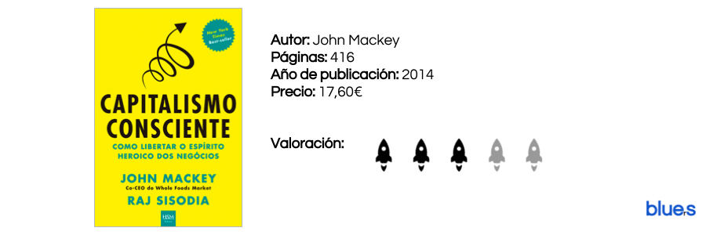

El pensamiento lateral
by Luis Morales
Posted on August 28, 2013 at 10:00 PM

“El pensamiento vertical se mueve solo si hay una dirección en que moverse; el pensamiento lateral se mueve para crear una dirección”.
Una de las óperas prima de Edward de Bono. Por si algún lector no sabe quién es este tipo, le recomendamos que busque en Internet, o mejor aun, que sin poder usar internet descubra la identidad de este misterioso genio.
Edward de Bono es el padre de la creatividad, el máximo exponente de este noble arte, capacidad o don, simplemente lo que se entiende hoy como creatividad se entiende gracias a los estudios realizados por este psicólogo maltés.
365 días de marketing
by Luis Morales
Posted on August 28, 2013 at 10:00 PM

Una fuente bastísima de herramientas online, ejemplos de campañas de marketing digital efectivas y proyectos innovadores en los que inspirarnos. Una herramienta muy útil a la que acudir a coger ideas en los momentos de "blancazo".
Realmente lo que se nos presenta en estas "páginas" PDF es una recopilación de los post del Blog de Juan Merodio durante el año 2010 ordenados cronológicamente y acompañados de imágenes y esquemas bastante útiles.
Leer másLa fábrica del emprendedor
by Luis Morales
Posted on August 28, 2013 at 10:45 PM

Cuidado, no es un libro sobre emprendimiento, no comentáis nuestro mismo error al ver el título. Es un ensayo político-económico sobre el mercado laboral actual, futuro y sus relaciones con el poder y sistema capitalista.
"Solo siendo capaces de organizarnos, de manera que la cooperación domine a la competencia, podremos empezar a construir la subversión contra el totalitarismo de la empresa-mundo"
Leer másCapitalismo consciente
by Luis Morales
Posted on August 28, 2013 at 10:45 PM

"Muchos economistas continúan utilizando metáforas industriales y mecanicistas para explicar como funciona la economía"
Lo primero es lo primero, y para entender este libro hay que saber quien es John Mackey. Es el co-CEO de Whole Foods Market. Es la primera cadena de supermercados de alimentos orgánicos y naturales y cuenta con 91.000 empleados; es decir, no es un “hippie” o un activista de Greenpeace (a los que no criticamos) Es un empresario con una compañía perteneciente al Fortune 500. Por eso este libro, aunque en un primer momento pueda dar la impresión de que es una estrategia de marketing o employer branding, es tan sorprendente. La lógica y el punto de vista con el que se afronta la moralidad empresarial y la sostenibilidad, es realmente, o eso parece, sincera y válida para grandes compañías, el talón de aquiles de la revolución sostenible.
Leer másBuscar
Categorías
En estos días, la bibliografía orientada al mundo del emprendimiento parece la gallina de los huevos de oro. Todo el mundo es experto y todas las instituciones creen saber el secreto del éxito.
Este Blog está creado por y para emprendedores, con el firme objetivo de separar la paja del grano y poner sobre la mesa aquellos libros que realmente creemos dignos de ser leídos y aquellas herramientas genuinamente valiosas para el emprendedor.